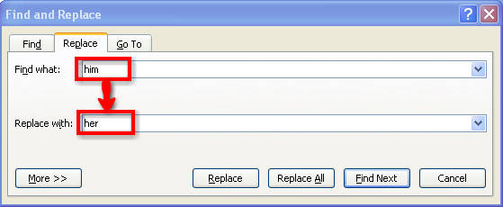
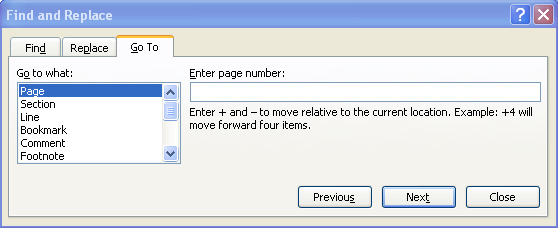
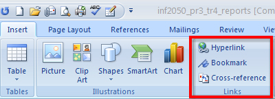
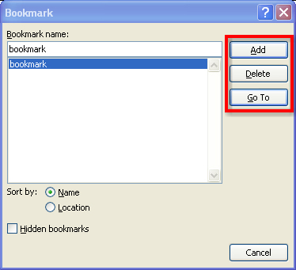
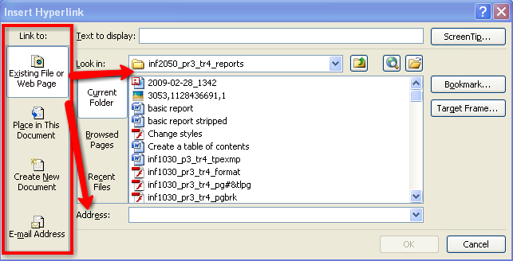

The Find, Replace, and Go To options in the Editing group on the Home tab in the ribbon are helpful features that allow you to quickly search and find information in your document. Use Find to search for word or a phrase (if necessary, you can then Replace your text with another word).

Microsoft product screen shot(s) reprinted with permission from Microsoft Corporation.
The Go To feature is a useful command for navigating long documents quickly in a variety of ways.

Microsoft product screen shot(s) reprinted with permission from Microsoft Corporation.
Have you ever started a document but knew you had to come back and make some edits or revisions? Or have you ever wanted to link your report directly to a Web site to provide more information for your reader? You can insert bookmarks and hyperlinks from the Links group of the Insert tab on the ribbon.

Microsoft product screen shot(s) reprinted with permission from Microsoft Corporation.

Microsoft product screen shot(s) reprinted with permission from Microsoft Corporation.
A bookmark allows you to “mark” a location or a section of text, and name the selection for future reference. This is helpful when you have a long document and want to find your marked location quickly. Simply select the text or item you want to bookmark, or position your cursor, click Bookmark in the Links group on the Insert tab, and in the Bookmark Name field, enter a name and click Add. Bookmark Names must begin with a letter character and may not include any spaces. Use the underscore to separate names (e.g., training_room). To go to a specific bookmark, click the name or click Go To. You can delete a bookmark here as well. You can also use Go To in the Find feature of the Editing Group.
Also in the Links group is the Hyperlink button, which allows you to link to another document or a Web address. Select the text or a picture to be linked, click Hyperlink, and link within the file, to another file, to a Web address, or to a new document.

Microsoft product screen shot(s) reprinted with permission from Microsoft Corporation.